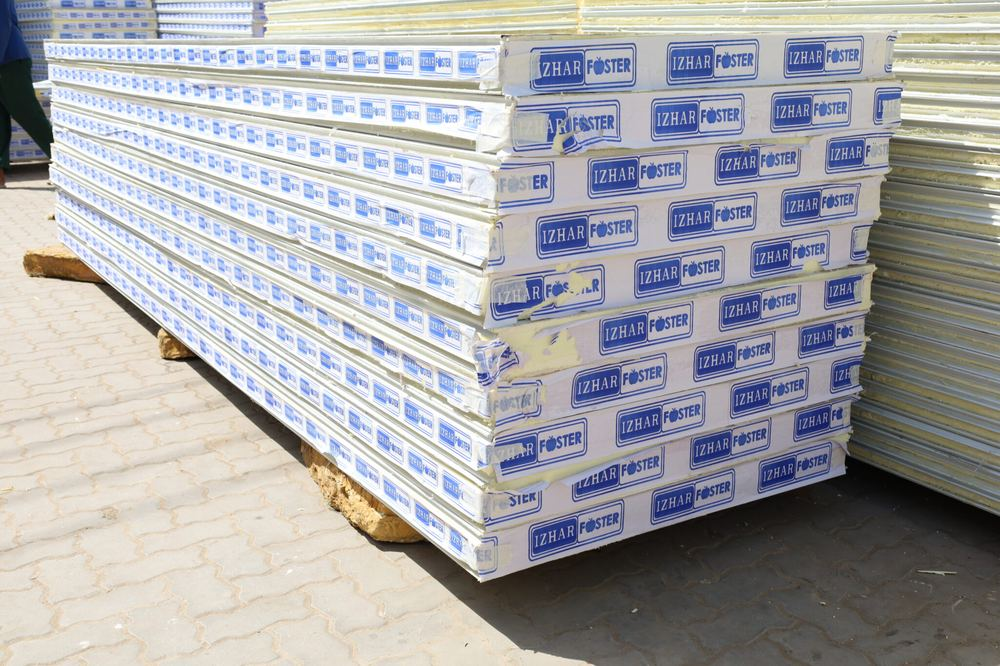

FireSafe PIR panels — 49× more insulating than concrete. Made in Pakistan.
Izhar Foster manufactures FireSafe PIR sandwich panels in Lahore with thermal conductivity λ ≈ 0.022 W/m·K (BS EN 14509 aged), fire class B1 to ASTM E84, density 40–45 kg/m³, in core thicknesses 50–150 mm (specials to 250 mm) and panel lengths up to 50 ft. Produced with eco-friendly pentane — zero ODP, no HCFC-141b. Pakistan's largest dedicated PIR (not PU) sandwich panel manufacturer (as of 2026).

PIR sandwich panels are the building envelope behind virtually every modern cold storage facility, food factory, warehouse, and energy-efficient industrial building. Izhar Foster manufactures ozone-friendly PIR panels — described as "a revolutionary development in Pakistan" — and discontinued legacy polyurethane (PU) production years ago in favour of safer, more sustainable technology.
Thermal performance you can quantify
Insulating effect is approximately 49 times greater than concrete and 42 times greater than brick at equivalent thickness. Thermal conductivity λ ≈ 0.022 W/m·K (BS EN 14509 declared aged value). The result is roughly 30% savings on energy and maintenance over the building's life — and FireSafe PIR holds those numbers stable across the panel's 50+ year service life.
Calculation: concrete λ ≈ 1.08 W/m·K (ASHRAE Fundamentals Handbook Ch. 26, Table 1) ÷ FireSafe PIR λ 0.022 W/m·K (BS EN 14509 declared aged value, λD) ≈ 49×. Brick λ ≈ 0.92 W/m·K ÷ 0.022 ≈ 42×.
Thickness selector — pick the U-value, get the spec
Lower U-value = better insulation. Cold rooms below −20°C and pharmaceutical 2–8°C envelopes typically use 100–150 mm. Ambient warehouses and prefab buildings use 50–80 mm. All thicknesses ship in panel lengths up to 50 ft to eliminate site joints.
| Core thickness | Thermal transmittance (U) | Thermal resistance (R) | Typical application |
|---|---|---|---|
| 50 mm | 0.36 W/m²K | 2.78 m²K/W | Ambient warehouse, prefab buildings |
| 60 mm | 0.31 W/m²K | 3.22 m²K/W | Light-duty cold rooms (+5 to +15°C) |
| 80 mm | 0.25 W/m²K | 4.00 m²K/W | Chillers (0 to +5°C), food processing |
| 100 mm | 0.19 W/m²K | 5.26 m²K/W | Cold stores (−5 to 0°C), pharma 2–8°C |
| 150 mm | 0.13 W/m²K | 7.69 m²K/W | Freezers and blast freezers (−25 to −40°C) |
Specials available up to 250 mm. U-values per Izhar Foster declared aged value method (BS EN 14509). For a sized recommendation, run our load calculator with your room temperature and ambient.
FireSafe PIR vs PU vs PUF vs EPS — and why it matters
"Sandwich panel" covers four distinct foam cores. The differences are real, measurable, and matter for cold-chain projects. PUF panel is a colloquial Pakistani search term — what's actually being made today, and what we manufacture, is PIR.
| Core | λ (W/m·K) | Fire class | Blowing agent | Notes |
|---|---|---|---|---|
| PIR (FireSafe) | 0.022 | B1 | Pentane (eco-friendly, zero ODP) | Self-extinguishing, low smoke, ASTM E84 / TSSC |
| PU / PUR / PUF | 0.024 | B2/B3 | HCFC-141b (ozone-depleting) | Izhar discontinued PU production for safety + WHO concerns |
| EPS | 0.034 | B2/B3 | Pentane | Cheaper. Not appropriate for cold rooms below 0°C or fire-rated envelopes |
| Mineral wool | 0.038–0.042 | A1 / A2 | n/a | Best fire performance, worst insulation. Used where A-class is mandated |
Environmental and safety
- Eco-friendly pentane blowing agent — zero ODP, no CFCs, no HCFC-141b
- Self-extinguishing — flame-retardant with no contribution to fire load
- Fire category B1 (foam B2) per ASTM E84 surface burning characteristics test (same standard as TSSC)
- Non-hygroscopic — water absorbency under 1% by volume; fully moisture-proof
- Asbestos-free, formaldehyde-free
- Pakistan's largest dedicated PIR (not PU) sandwich panel manufacturer — we discontinued PU after WHO concerns over HCFC-141b chemistry
Construction advantages
- Lightweight yet structurally strong (compressive strength >100 KPa at 10% compression)
- Panels available up to 50 feet long — eliminating site joints in tall cold stores
- Core thickness up to 250 mm for ultra-low-temperature freezers
- Self-assembly tongue-and-groove design reduces construction time and cost
- Lifespan exceeding 50 years with stable thermal performance
Technical specifications
| Property | Value |
|---|---|
| Thermal conductivity (λ) | 0.022 W/m·K (BS EN 14509 aged) |
| Density | 40–45 kg/m³ |
| Fire class | B1 (foam B2) — ASTM E84 |
| Compressive strength | > 100 KPa at 10% compression |
| Tensile strength | > 100 KPa |
| Shear resistance | ≥ 100 KPa |
| Water absorbency | < 1% by volume |
| Dimensional stability | < 1% |
| Asbestos content | None |
| Lifespan | 50+ years |
| Standard core thicknesses | 50 / 60 / 80 / 100 / 150 mm (up to 250 mm specials) |
| Maximum panel length | 50 ft |
| Blowing agent | Pentane (eco-friendly, zero ODP) |
Panel types
Wall panels: Vertical or horizontal installation with tongue-and-groove edges for tight, repeatable joints. Double panel lock guarantees fire resistance and seamless polyurethane seal preserves thermal insulating power across the joint.
Roof panels: Unique surface design with capillary-action-preventing chambers for long-term weatherproofing. Profiled lining with large bend radius protects the steel facing's coating across decades of thermal cycling.
PIR sandwich panels in industrial construction.
The engineering case for using FireSafe PIR as the structural envelope for warehouses, factories, cold-chain plants, and prefab industrial buildings — instead of brick, concrete block, or single-skin steel cladding.
Why building envelopes are switching to PIR
A traditional industrial envelope — 230 mm brick wall plus rendered finish — has a U-value of roughly 2.0 W/m²K. A 100 mm FireSafe PIR sandwich panel measures 0.19 W/m²K. The same wall area loses or gains heat ≈10× faster when built in brick. For an air-conditioned 2,000 m² warehouse in Lahore (40°C ambient, 22°C internal), that maps to roughly 180 kW of additional cooling load on a brick envelope versus a PIR-clad one — about PKR 6–8 lac/month in summer electricity at industrial tariffs. That single number is why every modern Pakistani cold-chain and food-processing facility built since 2015 uses PIR sandwich panels for the building envelope, not block-and-render.
Where PIR replaces conventional construction
FireSafe PIR is not a finish material laid over a brick wall — it is the wall. The steel facings provide the air-tightness and weather barrier, the PIR core provides the insulation, and the tongue-and-groove joint provides the structural continuity. A 100 mm panel spans up to 6.5 metres between supports unbraced (subject to wind load and orientation). For most single-storey industrial buildings — clear spans of 18–40 m, eaves 6–10 m — PIR panels carry the full envelope load with no secondary cladding, no insulation board, no vapour barrier, and no plasterboard lining required.
Five construction applications, with the engineering reason
1. Cold storage and freezer rooms
Below 0°C the panel choice is binary — PIR or mineral-wool composite. EPS is excluded by code in any cold-store fire envelope above 1,000 m². For deep-freeze (−25°C and below), 150 mm PIR cores deliver U ≈ 0.13 W/m²K with no thermal bridging across the joint — the seamless polyurethane joint seal is what makes this possible. We've installed cores up to 250 mm for blast freezers and pharma ULT (ultra-low temperature) cold rooms. Floors are typically not panelised — instead, slab-on-grade with extruded polystyrene below the screed, designed against the 18°C soil sink.
2. Food and beverage processing plants
Hygiene drives the spec: smooth pre-painted galvanized facings (typically PE 25 µm or PVDF for chemical-wash environments), continuous coved floor-to-wall transitions using stainless skirting, and panel joints that don't trap product. PIR's closed-cell structure (water absorbency <1% by volume) means the panel cannot absorb or harbour bacterial colonies the way mineral wool can. A failed wash-down doesn't propagate inside the core. This is the technical reason every dairy, beverage bottling, meat processing, and ready-meal facility we've built specifies PIR over fibrous insulation regardless of price.
3. Pharmaceutical clean rooms and warehouses
WHO GMP and ICH stability storage requirements (15–25°C, 30–60% RH, validated) require an envelope that is air-tight, low-particulate, and stable across decades. PIR panels meet ISO 14644-1 Class 7–8 cleanroom envelope requirements when joints are sealed with food-grade silicone and HEPA penetrations are properly detailed. The panel itself contributes near-zero particulate shed — unlike fibreglass batts behind plasterboard, which shed continuously. This is the technical reason every new pharma cold store in Pakistan is building in PIR, not block-and-render with a separate insulation layer.
4. Industrial warehouses and logistics hubs
Above ambient (uncooled), the case for PIR is energy savings, speed of construction, and fire performance. A 50,000 ft² warehouse skin built in 80 mm PIR installs in 4–6 weeks with a 12-person crew. The brick equivalent is 12–18 weeks, requires a curing window before wet trades, and won't reach the same air-tightness without a separate vapour layer. For 3PL operators where every week of delay is rent against a confirmed tenant, the schedule alone justifies the panel. Add the B1 fire class — relevant when you're storing high-value goods and an underwriter is pricing your premium — and the lifecycle case is unambiguous.
5. Prefabricated industrial and modular buildings
For staff accommodation, site offices, sports complexes, agricultural sheds, and modular school blocks, PIR panels combine the structural envelope and the thermal envelope in one component. Light steel framing supports the panels; the panels close the building. Buildings up to two storeys, 1,000 m² footprint, can be erected in 6–10 weeks fully fitted. Disassembly and relocation is possible because the panels are mechanically jointed, not bonded — a property no brick or concrete-block building shares.
Structural and code considerations specific to Pakistan
Wind load: 100 mm panels with profiled facings handle Pakistan's design wind pressures (44 m/s in coastal Karachi, 39 m/s inland) at typical 4–6 m girt spacings. For exposed 12 m+ wall heights or coastal sites, a structural calculation is required — we provide BS EN 14509-compliant load-span charts on request.
Seismic: Pakistan's seismic zones 2A–4 (per Building Code of Pakistan 2007) require the secondary steel framing to be designed to take the panel inertia. The panels themselves are tolerant of inter-storey drift up to roughly 1.5% because of the elastic compression of the foam core — they won't crack and fall like masonry infill.
Fire compartmentation: For warehouses above 5,000 m² or any cold store regardless of size, building code requires a fire-rated compartment wall every 1,500–3,000 m². FireSafe PIR's B1 classification covers single-occupancy enclosure fire-stopping; for full compartment separation a separate fire wall (typically mineral wool composite at the compartment line) is specified — we supply both panel types from the same plant and detail the junction.
Acoustic: Standard 100 mm PIR panel is around Rw 25 dB. For factories adjacent to residential areas (a common Pakistani planning constraint), specify a perforated inner facing or a double-skin panel for Rw 35–40 dB.
What a PIR-construction project looks like
From specification to occupied building, a typical 5,000 m² industrial envelope sequences as: site survey and panel takeoff (1 week) → panel manufacture in Lahore (3–5 weeks depending on volume) → secondary steelwork and fixings (parallel) → panel installation (3–5 weeks for the envelope) → joint sealing, flashing, and roof penetrations (1–2 weeks) → handover. Compare against a brick-and-render equivalent that runs 16–22 weeks for the envelope alone, plus separate insulation, ceiling, and lining trades. The labour cost difference on a 5,000 m² project is typically PKR 1.5–2.5 crore in favour of PIR, before counting the reduced cooling load over the building's life.
If you're at the design stage, our load calculator sizes the panel core thickness against your room temperature and ambient. For full-building consultation including structural and code review, talk to our engineers.
Where PIR sandwich panels are used.
Each application has different temperature, hygiene, and compliance demands. We've delivered for all of them.
Cold stores
Every cold room we build uses our own PIR panels
Food processing
Hygiene-friendly clean-room and processing-floor envelopes
Warehouses
Energy-efficient industrial warehouse construction
Reefer vehicles
Lightweight high-insulation panels for reefer trucks
Fire-rated rooms
Class B1 panels for sensitive industrial environments
Prefab buildings
Schools, offices, sports complexes, stadium structures
PIR Sandwich Panels — questions buyers ask.
The technical and commercial questions we hear most often before a contract is signed.
01What is the U-value of a 100 mm PIR panel?
02What thicknesses do you make?
03How does PIR compare to PUR / PUF?
04What's the difference between PIR and EPS sandwich panels?
05Are panels delivered ready to install?
06What's the panel lifespan?
07Are FireSafe PIR panels ASTM E84 compliant?
Want a rough cost estimate? Sales-engineer tool, ±20% band.
Sales-engineer tool that combines sizing with cost output. Editable Izhar margin line. Pakistan-tuned across 12 cities and 24 commodities. PIR panel area, civil, refrigeration — costed for any thickness from 50 to 200 mm.
Open the rough estimator →PIR panel guides from our engineers.
Specification guides, thermal efficiency analysis, and application case studies.
PIR Sandwich Panels: Thermal Efficiency & Smart Building Design
How FireSafe PIR panels compare to PU and EPS across cold-store, pharma, and industrial applications.
Cold Storage Cost in Pakistan 2026 — PIR Panel Prices
PIR panel cost per m², thickness selection, and lifetime energy savings over EPS alternatives.